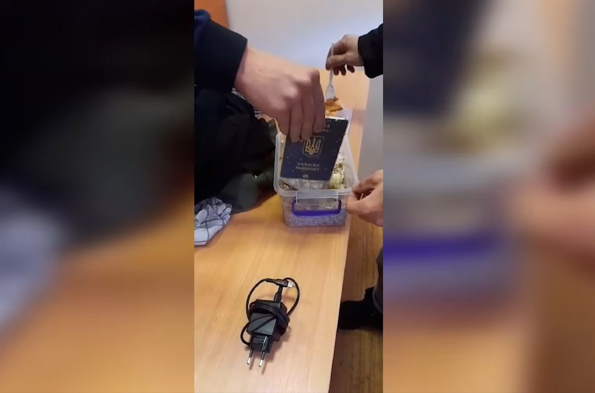
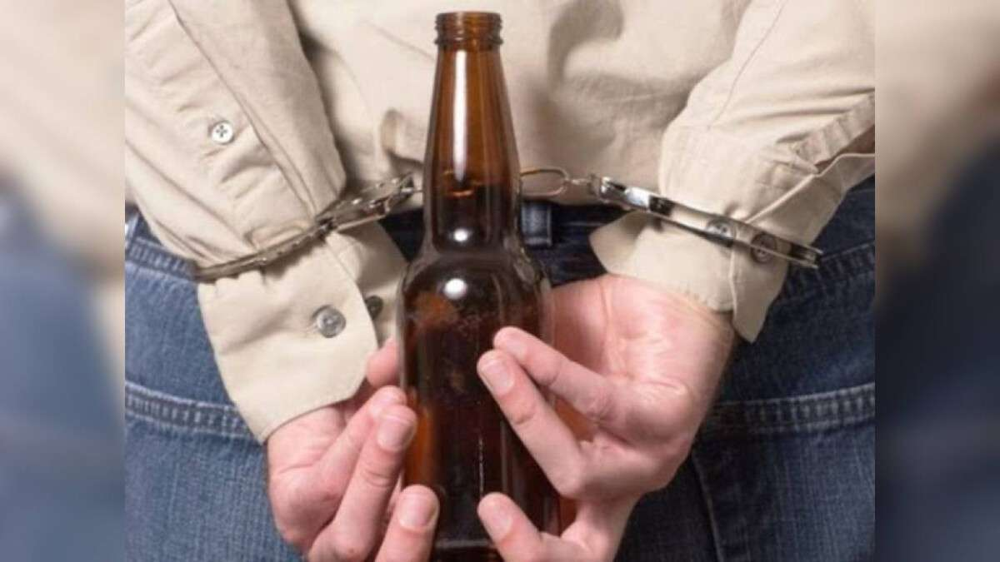
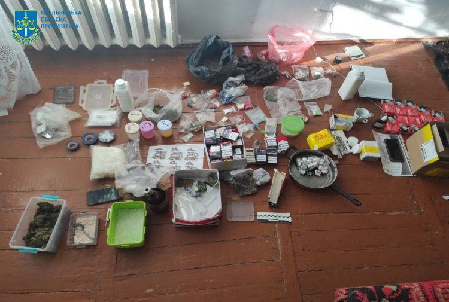
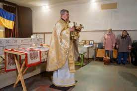

На Закарпатті прикордонники відділу «Ділове» Мукачівського загону затримали 22-річного жителя Кривого Рогу, який намагався незаконно потрапити в Румунію через гірську ділянку кордону.
Надивившись у мережі інтернет відео-інструктажів щодо гірського туризму, молодик самостійно склав собі маршрут руху з України в Румунію Карпатським високогір’ям та вирушив у подорож. Українець мав з собою внутрішній паспорт, а щоб при зустрічі із прикордонниками приховати справжню мету прибуття на Закарпаття, паспорт громадянина України для виїзду за кордон вирішив сховати у боксі з їжею. Документ, запакований у поліетилен прикордонники виявили під час огляду речей молодика.
Кінцевою метою закордонної мандрівки українця мала стати Німеччина.
Укрзалізниця створює підрозділ, який за допомогою дронів моніторитиме та охоронятиме залізничну інфраструктуру. У складі цього підрозділу працюватимуть ветерани-залізничники, які отримали поранення та повернулися з фронту.
Ця ініціатива допоможе забезпечити охорону залізничних обʼєктів, а також надати можливість ветеранам застосувати свій військовий досвід і навички в цивільній роботі.

У Дніпрі відбувся судовий процес, який викликав замішання у суспільстві. Доцент кафедри підприємництва та економіки Університету митної справи та фінансів був засуджений за крадіжку в магазині пива. Про деталі справи розповість "Дніпро Оперативний".
Подія сталася у травні 2023 року. Доцент, зайшовши до магазину «Море Пива» на Набережній Перемоги, побачив у вітрині холодильників дві пляшки пива, куряче в'ялене м'ясо та чіпси з часником. У нього виник злочинний умисел, і він вирішив викрасти ці продукти.
Тоді він узяв товар, що йому сподобався та поклав їх до пакета «АТБ», який заздалегідь мав при собі. Брав пакет він із собою умисно, чи ідея щось вкрасти виникла в нього вже потім — невідомо. Ділі він спокійно вийшов із магазину, не сплативши за продукти. Крадіж було помічено працівниками магазину. Вони викликали поліцію, і чоловіка затримали.

Правоохоронці Хмельниччини повідомили про підозру 21-річному жителю Кам’янеччини за фактом незаконного зберігання з метою збуту наркотичних засобів та психотропних речовин, повідомили у прокуратурі.
Хлопця запідозрили у розповсюдженні заборонених речовин методом «закладок» у місцевому парку в Кам’янці-Подільському.
Поліцейські за ухвалою суду провели обшук в кімнаті гуртожитку, де мешкає фігурант. Під час обшуку правоохоронці виявили пакунки з шістьма видами небезпечних наркотиків: близько 3 кг психотропної речовини «Альфа-PVP», 900 гр канабісу, 5 пакетів смоли канабісу, психотропи «2С-В» та «ЛСД», а також 15 згортків наркотичного засобу «Субутекс».
Вартість вилученого орієнтовно складає 4 млн грн.

Черкаська єпархія ПЦУ відсторонила від служіння священика зі Свято-Покровського храму (у селі Городецьке на Уманщині) ієрея Дмитра Плаксивого через звинувачення у чаклунстві. Про це 6 січня повідомило Суспільне.
Жителі села розповіли журналістам, що священика звинувачують у чаклунстві: він нібито «робив обряди із землею з кладовища». Хто саме звинувачував у цьому священика – не уточняється. « … Батюшку звинувачують у тому, що він ніби то займався прокльонами, ходив на кладовище, брав з могил землю та робив певні обряди, маніпулює людьми, вживає алкоголь та відмовився від ходіння-щедрування для воїнів ЗСУ, через що посіяв ворожнечу між старостою села, головою господарства та головою Паланської ОТГ», – розповів журналістам місцевий мешканець Юрій, який виступає проти відсторонення священика.
Журналістам вдалось ознайомитись з указом керівника Черкаської єпархії ПЦУ митрополита Черкаського та Чигиринського Іоана. Згідно з указом, ієрею Дмитру Плаксивому заборонено проводити богослужіння. Також його зняли з посади настоятеля релігійної організації «Релігійна громада парафії Покрови Пресвятої Богородиці». Причиною відсторонення, яка вказана в указі, є «невідповідність сану священнослужителя, численні порушення та відповідні скарги на його дії».